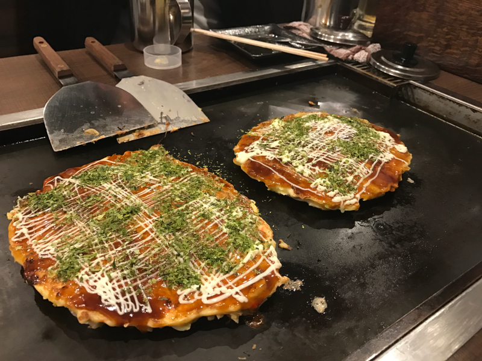
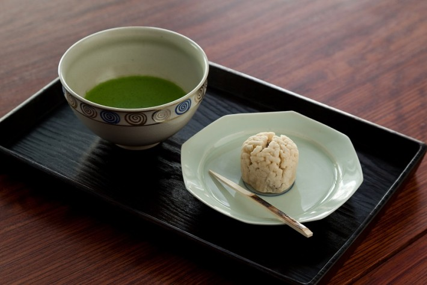

A super local restaurant that is popular for its fatty tuna. If you enjoy tasty flavors and unique textures of fish this is the place for you! Uoriki Kaisen Sushi is located in Shibuya.
A super local restaurant that is popular for its fatty tuna. If you enjoy tasty flavors and unique textures of fish this is the place for you! Uoriki Kaisen Sushi is located in Shibuya.
When in Japan, Udon is a must! Shin Udon has variety of killer Udon, offered in both hot and cold. The udon noodles are handmade! If you haven't tried cold Udon yet, order the cold udon with wagyu chuck eye roll with chopped yuzu. Shin Udon is located in Shinjuku.
If you're heading to the Toyosu Fish Market, swing by Nakaya. Nakaya specializes in fresh Sashimi and the menu is chirashi which means sashimi on a bowl of rice. Make sure you bring cash and hours are from 5am to 2pm.
 Okonomiyaki is a savoury Japanese pancake. They vary from diffrent regions of Japan. The Okonomiyaki experience is unique as you are allow to make it yourself. Don't worry, there are instructutions if it's your first time. It is a fun experience, split it like a pizza and share with your friends and family! Sometaro Okonomiyaki is located in Asakusa.
You can never go wrong with Ramen, it is an obsession in Japan! Rokurinsha Ramen is located at the Tokyo Station Ramen Street and offers a variety of ramen. This ramen restaurant is popular for ther Special Dip Noodle where the soup and noodles are seprated. At Rokurinsha Ramen, you order from a machine.
Reissue is a cafe located in Shibuya that specializes in 2D and 3D latte art. The latte art can be any character of your choice or bring a picture of your favorite celebrity. A bit of cuteness will make your Japan trip even more special!
If you're planning on visiting the Pokémon Center DX, be sure to make resevrations for the Pokémon Cafe to get drinks and snacks in your favorite Pokémon(s). Reservations are mandatory as seats are highly sought after but don't be discouraged. The experience is worth it! The menu offers a wide variety of hot and cold drinks as well as well dessert and food, from pancakes to burgers. There many souvenirs to purchase too!
 Ippodo Tea House is located inthe heart of Kyoto, Japan. Ippodo Tea House specializes in premium traditional Japanese tea. For tea lovers who are looking to experience tea tasting, this is the place! Ippodo Tea House offers tea classes where you learn to brew your own tea.
If you're looking for a more absorbed experience for tea tasting, try out Kimono Tea Ceremony Maikoya Kyoto. You can wear a kimono and learn about the culture and histroy of the tea ritual while making your own tea. Kimono Tea Ceremony Maikoya Kyoto is located in downtown Kyoto or in Osaka. It is one the most and best reviewed places for this experience. You can place same day reservations and private sessions.
You can find these vending machines while you're walking down the street.The drinks offered in these vending machines vary from ordinary to outrageous. Water, soda, joice, and coffee - you name it! You'llbe surprised but don't hestiate to approach these vending machines. When you order a drink, the drink will come out cold like it's been refridgerated or warm enough for a fresh hot drink.
Located in Omotesando, Tokyo, the Tokyo Whiskey Library has more than 1000 Whiskey collections from all over the world. A must-visit place! Dishes are available to have with drinks as well such as their Wagyu Steak Beef.